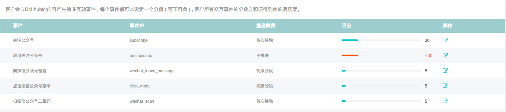
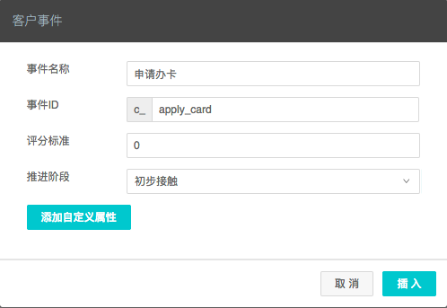
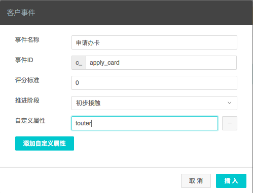

客户事件
客户事件模型
在DM Hub中，客户的行为都是以客户事件（CustomerEvent）的形式记录的。客户事件会记录客户发生相关行为的所有信息，例如具体行为，行为发生时间，行为涉及的内容，等。DM Hub会根据客户的事件记录进行相关的客户行为分析，漏斗分析，触发自动流程等。通常来讲，客户事件是不可更改不可删除的，因为一般的，客户行为一旦发生便不可逆转。更改客户事件可能会造成DM Hub一些行为的不准确。
| 属性 | 属性意义 | 类型 | 说明 |
|---|---|---|---|
| id | 客户事件ID | Long | 只读字段 |
| customerId | 客户id | Long | 发生行为的客户。 |
| event | 事件类型 | String | 事件类型，最长32个英文字符。 |
| targetId | 行为所关联的目标id | String | 比如如果事件为关注公众号，targetId为公众号在DM Hub系统中的id。最长255个字符。 |
| targetName | 行为所关联的目标名称 | String | 比如如果事件为关注公众号，targetName为公众号的名字。最长255个字符。 |
| date | 行为所发生的时间 | String | 格式为:“2017-06-07T12:20:20Z” |
| source | 来源 | String | 预先设定的来源，比如订单是从淘宝来的，则来源可以设置为淘宝。 |
| score | 客户活跃度 | Integer | 发送该事件会给客户增加多少活跃度。 |
| tag | 事件发生后为客户添加的内容标签 | String | 多个标签可以用逗号隔开。最长255个字符。 |
| campaign | 营销活动code | String | DM Hub创建的营销活动代码 |
| campaignName | 营销活动名称 | String | DM Hub创建的营销活动的名称 |
| lastUpdated | 事件记录进入在DM Hub系统的时间 | String | 只读字段 |
系统已经内置了以下事件，可以通过访问DM Hub的 设置 > 客户事件 页面查看

该页面列出了所有内置事件的类型id，推进阶段和默认的活跃度评分。
除了系统内置事件，您还可以添加自定义事件。要添加自定义事件，请在客户设置页面点击 新建自定义事件 按钮：

在自定义事件创建对话框中，您可以设置事件的类型id，默认活跃度分数，和事件推进阶段。为了避免将来与内置事件类型发生冲突，自定义事件类型都强制以c_开头，比如上图中的事件类型id为c_apply_card。
对于自定义事件类型，除了系统内置的属性 (见 客户事件模型) 外，还能添加最多5个自定义属性。要添加自定义属性，请在自定义事件对话框内点击 添加自定义属性 按钮。
还是以申请信用卡事件c_apply_card为例，我们可以增加一个属性touter来记录地推人员的id。

创建客户事件的API
我们以上面定义的自定义事件c_apply_card为例介绍客户事件的创建。
调用请求
HTTP请求方式: POST
https://api.convertlab.com/v1/customerevents?access_token={access_token}
POST请求示例：
{
"customerId": "123456",
"event": "c_apply_card",
"targetId": "golden_card",
"targetName": "金卡",
"date": "2017-06-07T03:43:00Z",
"source": "人民广场",
"touter": "t00001"
}
参数说明 - {access_token}为访问接口的令牌 - 请求体内字段的意义请参见客户事件模型部分
返回结果
{
"id": 1,
"customerId": 123456,
"event": "c_apply_card",
"targetId": "golden_card",
"targetName": "金卡",
"date": "2017-06-07T03:43:00Z",
"source": "人民广场",
"score": 0,
"tag": null,
"campaign": null,
"campaignName": null,
"contentName": null,
"externalId": null,
"lastUpdated": "2017-06-07T05:38:52Z",
"touter": "t00001"
}
获取单个事件的API
调用请求
HTTP请求方式: GET
https://api.convertlab.com/v1/customerevents/{id}?access_token={access_token}
参数说明 - {access_token}用从“获取身份权限”节拿到的access_token替换 - id 客户事件id
返回结果
{
"id": 1,
"customerId": 123456,
"event": "c_apply_card",
"targetId": "golden_card",
"targetName": "金卡",
"date": "2017-06-07T03:43:00Z",
"source": "人民广场",
"score": 0,
"tag": null,
"campaign": null,
"campaignName": null,
"contentName": null,
"externalId": null,
"lastUpdated": "2017-06-07T05:38:52Z",
"touter": "t00001"
}
查询事件的API
调用请求
HTTP请求方式: GET
https://api.convertlab.com/v1/customerevents?access_token={access_token}&customerId={customerId}&event={event}&lastUpdatedFrom={lastUpdatedFrom}&lastUpdatedTo={lastUpdatedTo}&max={max}&rows={rows}&page={page}&sidx={sidx}&sord={sord}
参数说明
| 参数 | 是否必填 | |
|---|---|---|
| access_token | 是 | 访问API的令牌 |
| customerId | 否 | 查询指定客户的事件列表 |
| event | 否 | 查询指定的事件类型。多个事件类型可用逗号分开 |
| lastUpdatedFrom | 否 | 事件更新的起始时间。时间格式为 “2017-06-07T12:13:14Z”, 为UTC时间 |
| lastUpdatedTo | 否 | 事件更新的结束时间。时间格式同上 |
| max | 否 | 最多返回多少条数据，默认为20，最大可到1000 |
| rows | 否 | 每页的记录数 |
| page | 否 | 起始页数，以1开始 |
| sidx | 否 | 排序的字段，比如如果按lastUpdated排序，sidx=lastUpdated |
| sord | 否 | asc表示升序，desc表示降序，默认为升序 |
返回结果
[
{
"id": 1,
"customerId": 123456,
"event": "c_apply_card",
"targetId": "golden_card",
"targetName": "金卡",
"date": "2017-06-07T03:43:00Z",
"source": "人民广场",
"score": 0,
"tag": null,
"campaign": null,
"campaignName": null,
"contentName": null,
"externalId": null,
"lastUpdated": "2017-06-07T06:43:29Z",
"touter": "t00003"
}
]